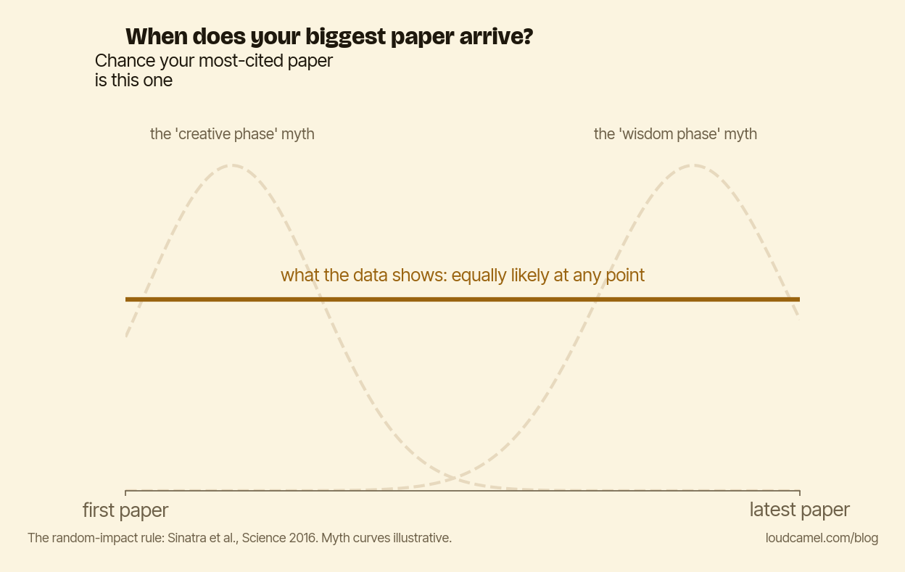

Why your biggest paper hasn't happened yet
Picture the most-cited paper you will ever write. Now guess where it sits in your career. Early, while you were fresh and fearless? Late, once you finally knew what you were doing?
Here is the message of this post: it lands at a random point, and that is true no matter where you are right now. Your biggest paper has not necessarily happened yet, and the one thing that decides whether it happens at all is whether you are still publishing when it shows up.
Roberta Sinatra, Dashun Wang, Pierre Deville, Chaoming Song and Albert-Laszlo Barabasi looked at the careers of thousands of scientists across disciplines and asked, for each researcher, where the single most-cited paper appeared (Sinatra et al., Science, 2016). The answer is one of the most consequential and least known findings in the science of science. They called it the random impact rule.

The biggest paper of a career is statistically uniform across the productive part of that career. Not more likely early, which kills the “creative phase” myth. Not more likely late, which kills the “wisdom phase” myth. As the figure shows, your top paper is as likely to be your 3rd as your 30th. The only requirement is that you produced enough papers for the lottery to hold a ticket of yours.
What sets the height of your peak
If position is random, what decides how big the big one gets?
Two things multiplied together. One is the inherent quality of the paper-shaped ticket you happened to draw, which is luck. The other is your individual Q-factor, a stable parameter that captures your ability to take a project and turn it into impact.
Here is the humbling part from the same study. The Q-factor is largely set early and stays roughly constant across a career. You do not get better at having impactful ideas as you age. You also do not get worse. What you do is keep buying tickets, and the tickets are independent draws.
More papers is a sample-size argument
So publication volume in your area is not a vanity metric. It is a sample-size argument.
Every paper is one draw from a distribution whose top is statistically independent of which paper it is. More papers means more draws, which means more chances to hit a big one. That is just arithmetic on the random impact rule.
This is not a license for spammy least-publishable-units. The Q-factor sets the quality of your draws, and shredding one good project into five thin ones does not raise it. The target is the other failure mode: the perfectionism that produces zero papers a year. A polished manuscript that never ships is a ticket you chose not to buy.
Don’t quit
Most advice frames quitting as a complex, contextual decision weighed against your field, your funding, your family. The data here says the load-bearing part is simpler. The biggest predictor that you will not have a high-impact paper is that you stopped writing them.
Many early-to-mid-career researchers quietly decide around year five that the breakthrough was not going to come, and pivot. Some of those decisions are right. Many are made one paper too early. If your Q-factor was going to pair with a great ticket on draw number twenty-two, and you stopped at twenty, you will never know the difference between “no talent” and “stopped drawing.” From the outside they look identical.
The rule cuts both ways. It does not promise you a hit. It promises that as long as you keep drawing, the hit is not behind you by default. Stop drawing and it is.
The one thing to do now
Open your calendar. Pick a date in the next eight weeks. Put “first draft of next paper, complete” on it.
The smallest-scope publishable version counts. The only failure mode is not having a next paper. And if you have not published in eighteen months, treat that as the one real emergency, because it is the only state in which the random impact rule has nothing left to work with.
This post is part of the Loud Camel field guide to academic visibility. You can read the whole guide as a single PDF: the handbook.